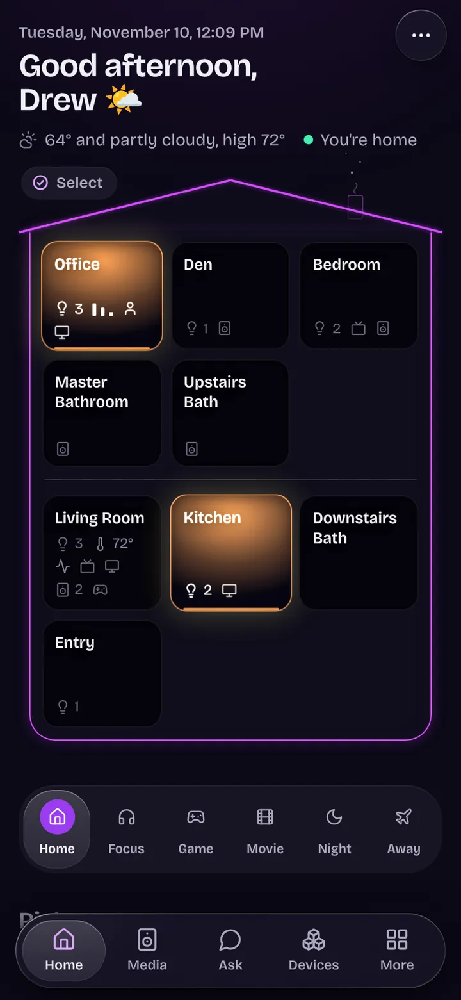
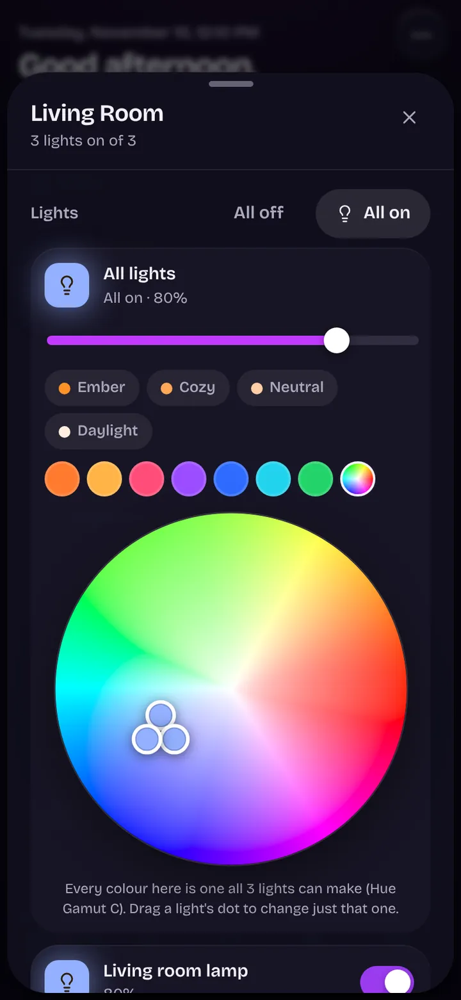
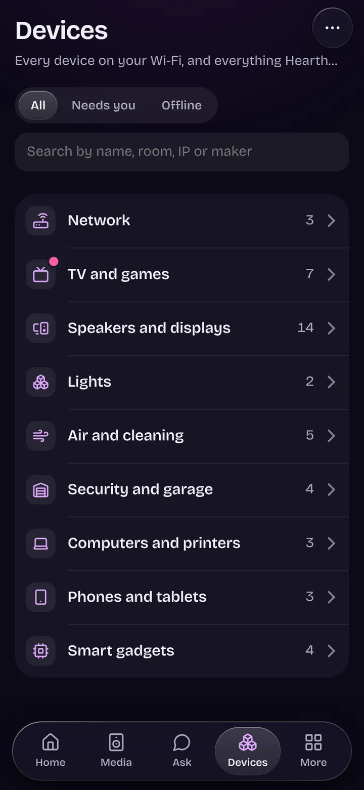
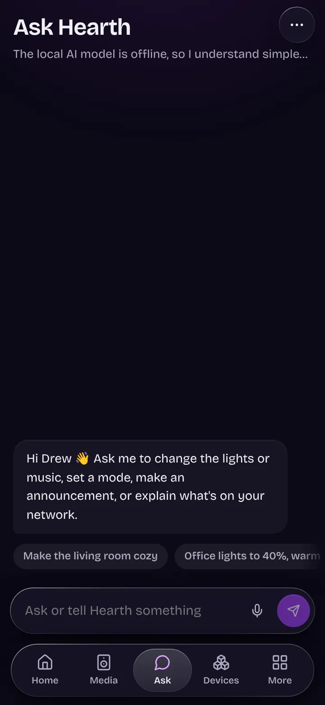

The situation
Only counts while it is awake and idle.
Where it runs
- Windows
- Model stack
- Hearth
- A game
A home hub that runs on my own PC. Lights, speakers, TVs, cameras and air purifiers in one dashboard, spoken to directly over the home network wherever a device allows it. The cameras record to a disk I own.
This is the real dashboard in its demo mode, which simulates a home and touches nothing real.
A room’s lights. One slider dims every lamp in the room as it moves. The colour wheel offers only colours all three lamps can make, and each lamp has its own dot to drag.




I own a lot of smart-home gear and was not getting much out of it. Every brand wants its own app and its own cloud.
I wanted one fast dashboard on my phone, automation that does not depend on a maker’s cloud wherever the device allows it, and camera recordings that stay on a disk I own. It also had to live politely on a gaming PC: idle when nobody is looking, and off the graphics card the moment a game starts.
The camera maker’s API hands over a live stream and nothing else. Everything after that happens on the PC.
Hue, Sonos, Chromecast, Nanoleaf and the TVs are driven over the local network with their own protocols. A maker’s cloud is used only where the device leaves no choice, and every credential lives in Windows Credential Manager.
It is faster, and it keeps working when someone else’s service is having a bad day.
A guest link opens lights and speakers, plus whatever extras I tick. When a guest runs a scene, each step’s target is turned into the exact devices it reaches right then, every one is checked, and that list is what runs.
A review found the gap this closes. A selector that was checked once and looked up again as each step ran could reach a device that turned up in between, such as a door lock that an integration added back mid-run. The guest simulation shows the rules.
Hearth’s models are 16 to 18 GB and share one 24 GB card with my local model stack. Right before every request Hearth asks the other tenant whether to use the card, fall back to a second model server on the processor, or wait.
Loaded side by side, both spilled into shared memory and crawled. The placement simulation runs the same rules.
When the dashboard felt laggy, it was measured with my real house’s data on a phone slowed six times. The home page sitting still was busy 0.89 seconds of every second. It is now under 0.08.
The fixes were specific once the numbers were in: loops that animate only transform and opacity, live updates applied once per frame instead of once per message, and nothing that waits on a slow count.
Re-compressed clips played everywhere except my phone. The hardware encoder was stamping every file as HEVC level 6.2 whatever its size, and an iPhone plays up to 5.1.
The encoder is now told the level and its output is checked. Files already on disk were mended in place by rewriting the one level byte in each header, so nothing had to be encoded twice.
One camera’s live view, snapshots and person spotting all stopped 17 seconds after each start. The stream probes the network with padding-only packets, which arrive as empty pictures, and to FFmpeg an empty packet means the stream has ended.
Empty packets are dropped before the decoder sees them, and a decoder that gives no picture for three keyframes is started afresh.
Button presses took up to a third of a second. Pings showed why: the TV’s Wi-Fi dozes between packets, answering in 2 to 354 ms and dropping one in five to ten.
While the remote is on screen, Hearth pings the TV every 50 ms to keep its radio awake, which brought the median to 3 ms. Sending small writes at once on every proxy connection removed a wait of up to 200 ms that Windows was adding.
A question to the assistant was answered on the processor because the card was busy. The first word took 70 seconds, and Safari drops a connection that has said nothing for 60.
The reply stream now says where the answer is being made before the model starts, and sends a keep-alive every 10 seconds.
The air purifiers’ cloud kept turning down a correct login. Accounts live on one of its regional sign-ins, which do not follow where you live, and a region that has never heard of an account answers exactly like a wrong password.
When the region it asked says no, Hearth now asks each region whether it knows the email, and sends the password only where one does. The settings page says which it was: no account with that email, a wrong password, or an account locked for a while.
After a restart, the remote said the Apple TV needed pairing again. It was talking to my watch. Phones and watches on my Wi-Fi keep changing addresses, an old announcement of the Apple TV’s still named an address the watch had since been given, and Hearth remembers what a device is once it knows.
For a phone, a tablet or a watch, the router’s word now wins, since it knows a device by its hardware address and not by the address it happens to hold. Of several devices that could be the Apple TV, Hearth picks the one it is paired with, never the first it finds. When Hearth decides a device is another model than it thought, the log now says so.
Both simulations run in your browser with invented data, and follow the rules of the Python they are modelled on.
Only counts while it is awake and idle.
The dashboard hides what a guest cannot use, but the hiding is only for looks. Every request is checked again on the server.
I built Hearth with Claude Code. I set what it should do, the house rules it has to follow and what counts as done, and I report what I see using it on my phone. Claude wrote the code and the tests. The workflow is written up here.